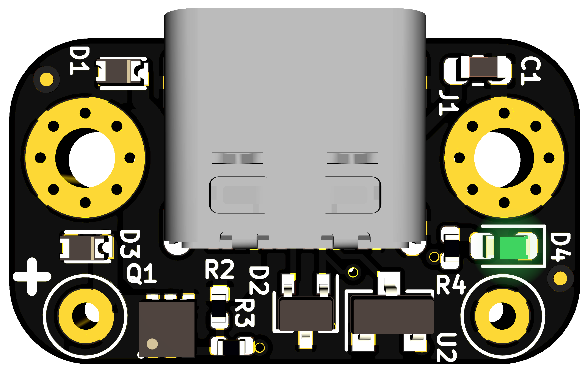

fpx: easy
USB‑C power for all your devices
Tiny & easy to configure module that enables
use of USB‑C (USB‑PD) chargers, adapters & power banks as power
sources.
Power your next project with USB‑C or upgrade your existing
devices.

21mm (L) × 12mm (W) × 6mm (H)
Features
- Configure (and reconfigure) in a few
seconds using any smartphone, tablet, watch or a workstation/laptop.
- Up to 100W (20V @ 5A) output.*
- Voltages: 5V, 9V, 12V, 15V and 20V.*
- Currents: 0.5A‑5A in 0.25A steps.*
- M2 mounting holes.
- Reverse voltage, over-voltage & ESD protection on USB pins
and output terminals.
- Supply line discharge on cable detachment and voltage changes.
- Supply voltage monitoring and auto‑shutoff (protection against malicious
or misbehaving sources).
- ATtiny based open source
hardware, firmware and configuration tool.
Benefits
- Expand the type of projects you can do with easy and safe power
up to 100 watts.*
- Power your devices by your car adapter and on the go with a
power bank, instead of only with the wall adapters they came with.
- Power more of your portable devices with a single adapter when
travelling.
- One set of USB‑C adapters means backup power for every USB‑C
powered device you have.
- Re‑use your high quality USB‑C adapters and save space storing
random bricks and save time looking for them.
- Freedom to pick what length of cable to use.
- Replace damaged cables only, not entire adapters.
* available voltage, current and output power
depend on capabilities provided by your power source
* higher outputs require lower guage wires
(thicker) and adequate ventilation to ensure the board is kept cool.
Purchase
ready to use modules for $20
You’ll be getting a tested, high quality module with ENIG finish and
assembled in the USA,
while at the same time supporting this project. Alternatively, you can
send the open source design
for manufacturing yourself.
The board has a light sensor which reads your desired configuration from the
light pulses generated on this page.
You can therefore configure your board from any device with a screen and
a Javascript capable browser (e.g. Smart phone/watch, laptop). Watch
the how-to video or jump right into it below. Learn more about fpx at my blog.